Crawling Deep Web Entity Pages
- 2013 年论文，发表在WSDM ‘13 Proceedings of the sixth ACM international conference on Web search and data mining
Introduction
- Document-oriented textual content: Wikipedia, PubMed, Twitter
- Curate structured entities: almost all online shopping sites
Existing crawling techniques optimized for document oriented content are not best suited for entity-oriented sites.
In this paper we focus on entity-oriented deep-web sites. These sites curate structured entities and expose them through search interfaces.
Deep Web
定义: The deep web, invisible web, or hidden web are parts of the World Wide Web whose contents are not indexed by standard search engines for any reason. The content is hidden behind HTML forms.
大小:
- Only a 4% of information is visible to the search engines like
GoogleorYahoowhich is said to be a “Visible Web” or “Surface Web“. - The Deep Web is estimated to be 500x the size of the Surface Web
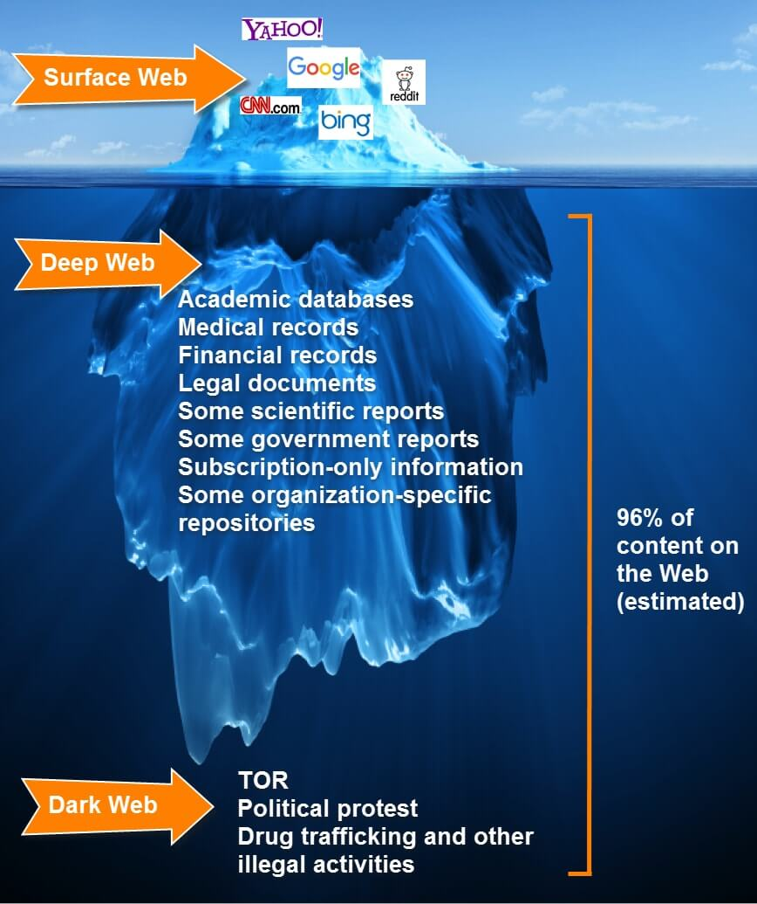
Entity-oriented Deep Web
Amazon.com:
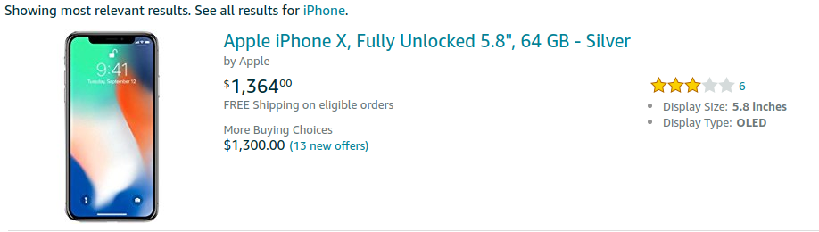
lagou.com:
movie.mtime.com:
现有搜索引擎爬取暗网解决方案
Baidu: 第三方平台通过提交结构化数据给百度，从而获得百度的搜索结果。
Google: 自动模拟form表单提交过程，来尽量进行一个更全的数据索引。
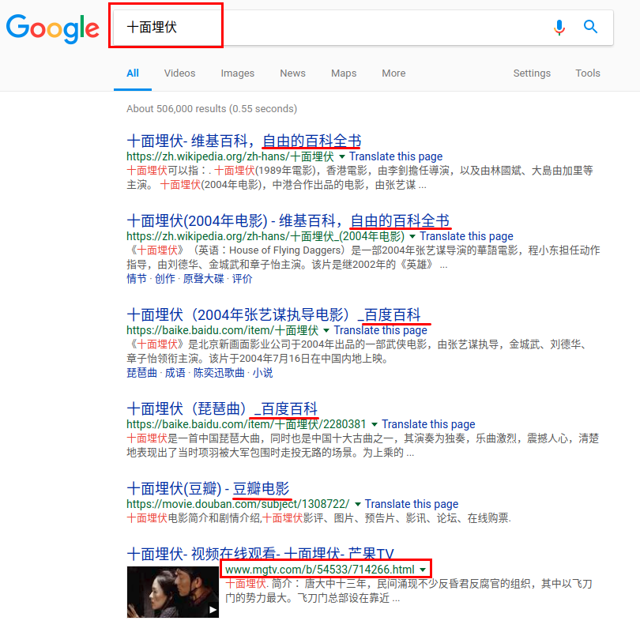
The goal of our system
Crawl product entities from a large number of online retailers for advertisement landing page purposes. The purpose of the system is not to obtain all iphone listings, but only a representative few of these listings for ads landing pages.
While the exact use of such entities content in advertisement is beyond the scope of this paper, the system requirement is simple to state: We are provided as input a list of retailers’ websites, and the objective is to crawl high-quality product entity pages efficiently and effectively.
Traditional deep-web crawl literature, which tends to deal with individual site and focus on obtaining exhausive content coverage.
System Overview
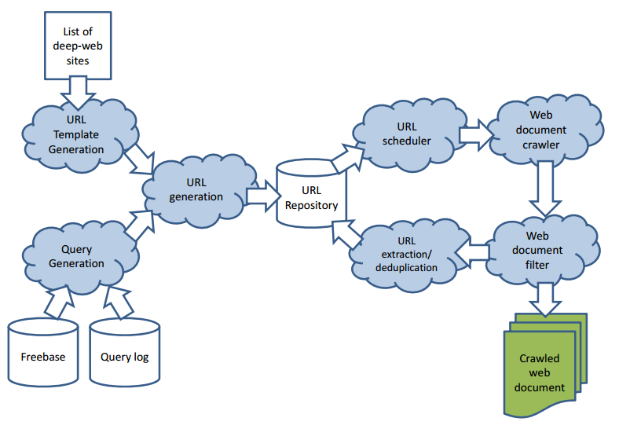
URL template generation
几个深网网站主页面作为输入:
| Deep-Web sites |
|---|
https://www.ebay.com |
https://www.taobao.com |
经过 URL 模板生成器 模块以后输出:
| URL templates |
|---|
https://www.ebay.com/sch/i.html?_nkw={query} |
https://s.taobao.com/search?q={query} |
Parse search forms technique Google’s Deep-Web Crawl:
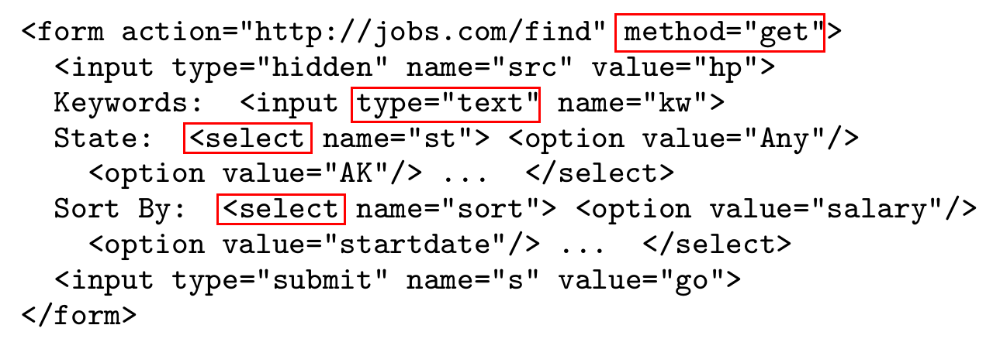
- 便于搜索引擎索引
- 忽略带有
password类型的input，需要输入个人信息 - 忽略带有
textarea类型的input，一般作为feedback/comments - 处理
JavaScript事件，超出了论文范围
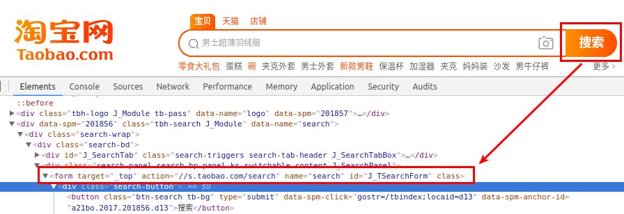
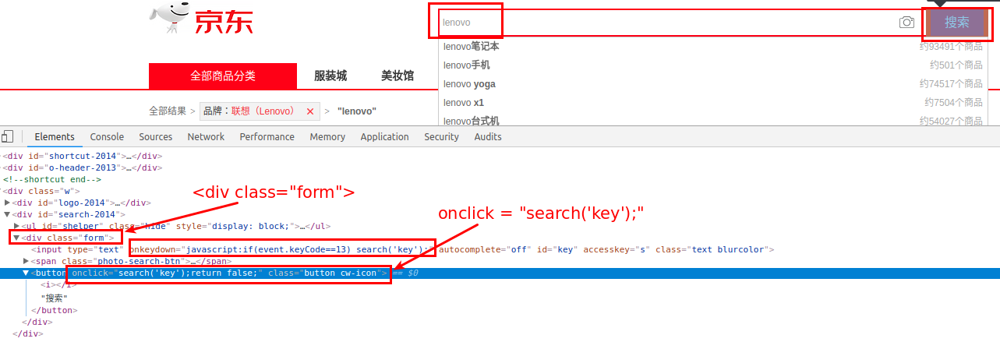
输入的查询组合:
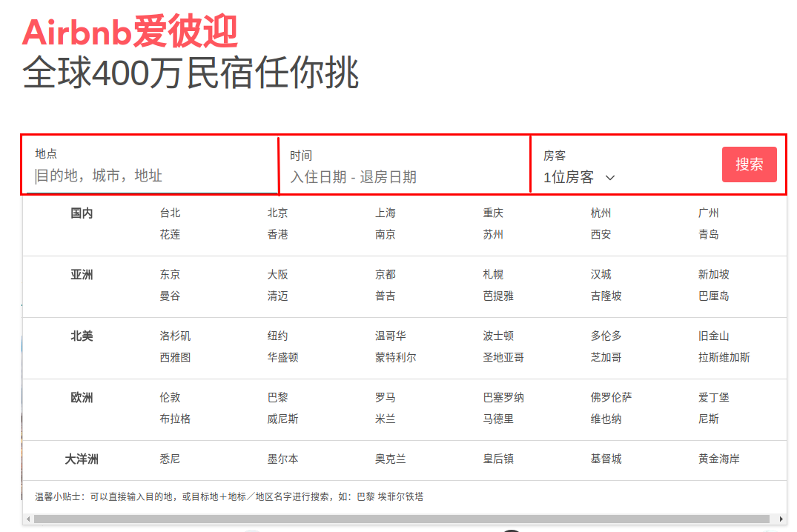
生成 7 个查询模板：
{地点}{时间}{房客}{地点, 时间}{时间, 房客}{地点, 房客}{地点, 时间, 房客}
每个模板，提交若干个查询，观察返回页面内容变化情况，如果大部分返回内容都相同或相似，则说明这个查询模板不是富含信息查询模板。
假设按照上面方式对所有模板一一试探，判断对其是否富含信息查询模板，则因为查询模板数量太多，系统效率还是会低。为了进一步减少提交的查询数目，Google 又提出了 ISIT (Incremental Search for Informative Query Templates) 算法:
首先从一维模板开始，对一维模板逐个考察，看其是否富含信息查询模板，如果是的话，则将这个一维模板扩展到二维，再次考察对应的二维模板，如此类推，逐步增加维数，直到再也无法找到富含信息查询模板为止。通过这种方式，能够大幅度提升系统效率。
However, our analysis shows that generating URL templates by enumerating values combination in multiple input fields can lead to an inefficiently large number of templates and may not scale to the number of websites that we are interested in crawling.
我们还发现 for entity-oriented sites:
- the main search form is almost always on home pages instead of somewhere deep in the site
- search forms predominantly use one main text fields to accept keyword queries
This obviates the need to use sophisticated techniques to locate search forms deep in websites.
Query generation and URL generation
We utilize two data sources for query generation: query logs and knowledge-bases. Our main observation here is that classical techniques in information retrieval and entity extraction are already effective in generating entity queries.
1. Entity extraction from query logs
Takes the Freebase and query logs as input, outputs queries consistent with the semantics of each deep-web site.
|
|

问题所在: queries in the query logs tend to contain extraneous tokens in addition to the central entity of interest:
Google 实际接受的关键字查询 hp touchpad reviews 用来直接在 ebay 上搜索:
ebay 实际上需要的词汇 hp touchpad:
这个时候我们需要…a comprehensive entity dictionary
Freebase: Freebase 是个类似 wikipedia 的创作共享类网站，所有内容都由用户添加，采用创意共用许可证，可以自由引用。两者之间最大的不同在于，Freebase 中的条目都采用结构化数据的形式，而 wikipedia 不是。
- It was developed by the American software company
Metaweband ran publicly since March 2007. Metawebwas acquired by Google in a private sale announced 16 July 2010. Google’s Knowledge Graph was powered in part by Freebase.- 对外提供 RDF、API 形式的数据
- On 16 December 2015, Google officially announced the Knowledge Graph API, which is meant to be a replacement to the Freebase API.
Freebase.comwas officially shut down on 2 May 2016.
RDF 把天下所有的信息以同一种方式描述:
每一条描述都是一个主谓宾三元组构成的短句:
|
|
你要直接说 「苹果公司的 CEO 是个叫库克的人」 ，计算机就凌乱了啊，因为自然语言包含太多的不确定性。有了许多这样的三元组以后，我们就可以得到一个知识网。

“知识图谱” （Knowledge Graph） —— 可以将搜索结果进行知识系统化，任何一个关键词都能获得完整的知识体系。比如搜索“Amazon”（亚马逊河），一般的搜索结果会给出和 Amazon 最相关的信息。比如 Amazon 网站，因为网上关于它的信息最多，但 Amazon 并不仅仅是一个网站，它还是全球流量最大的 Amazon 河流。如果在追溯历史，它可能还是希腊女战士一族的代称。而这些结果未来都会在 Google 搜索的“知识图谱”中展现出来。
Knowledge Graph data about Thomas Jefferson displayed on Google Web Search:

|
|
服务器返回结果:
|
|
we first obtained a dump of the Freebase data — a manually curated repository with about 22M entities. We then find the maximum-length subsequence in each search engine query that matches Freebase entities as an entity mention. The remaining tokens are treated as entity-irrelevant prefix/suffix. We aggregate distinct prefix/suffix across the query logs to obtain common patterns ordered by their frequency of occurrences. The most frequent patterns are likely to be irrelevant to entities and need to be cleaned.
- 匹配
entity - 按照出现的频率排序
entity不想关的前缀/后缀 - 移除出现较多的前缀/后缀
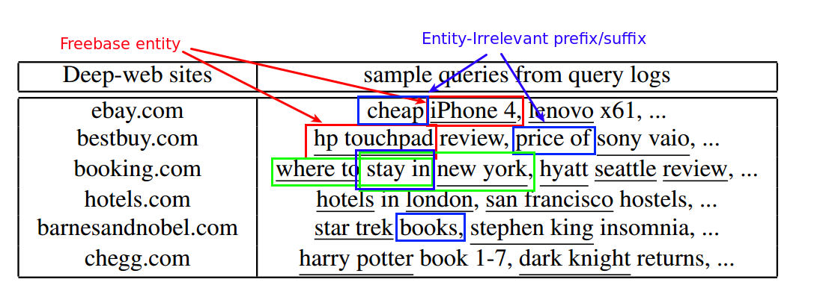
Example entities extracted for each deep-web site:
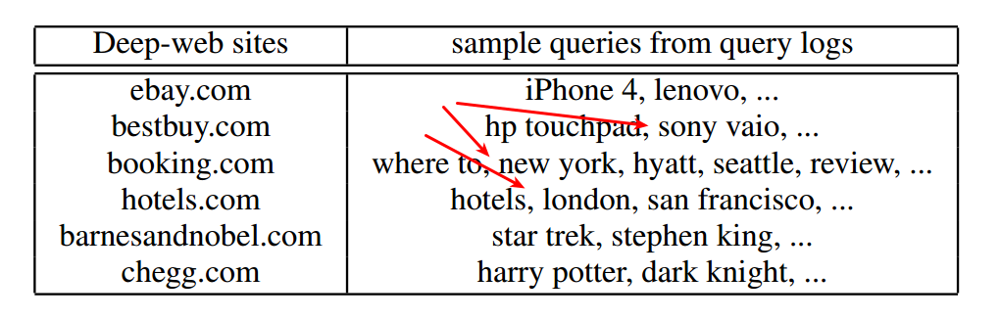
2. Entity extraction from using knowledge-bases
While query logs provide a good set of initial seed entities, its coverage for each site depends on the site’s popularity as well as the item’s popularity. Even for highly popular sites, there is a long tail of less popular items which may not be captured by query logs.
长尾效应: 极少数个体（横轴）对应极高的值（纵轴），而拥有极低值的个体，数量却占总体的绝大多数:
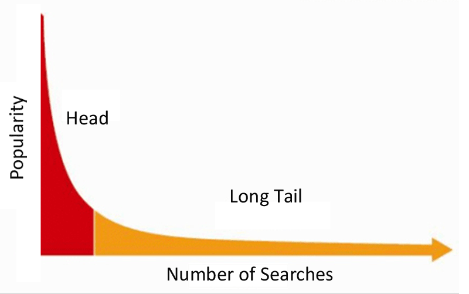
Examples of these two types of keywords would be:
- Non-long tail: “jewelry” – 201,000 searches per month in Google
- Long tail: “men’s silver jewelry” – 260 searches per month in Google
“Men’s silver jewelry” is an example of a long tail keyword as it gets searched for less than the more generic “jewelry” keyword. As these long tail keywords are searched for less often, they can be less attractive for large and successful websites with big marketing budgets to try and rank for.
On the other hand, we observe that there exists manually curated entity repositories (e.g., Freebase), that maintain entities in certain domains with very high coverage (city names, books, car models, movies, etc) 在相应领域覆盖面都比较全.Thus, for each site, we need to bootstrap from these seed entities to expand to Freebase entity “types” that are relevant to each site’s semantics.
我们可以…继续使用 Freebase 来扩展我们的种子 entities。
- 词频 (term frequency, TF):

- 逆向文件频率 (inverse document frequency, IDF) 是一个词语普遍重要性的度量

如果一个词越常见，那么分母就越大，逆文档频率就越小越接近0。分母之所以要加1，是为了避免分母为0（即所有文档都不包含该词）。log表示对得到的值取对数。
- TF-IDF:

可以看到，TF-IDF与一个词在文档中的出现次数成正比，与该词在整个语言中的出现次数成反比。
- 提取文档关键词
- 信息检索时，对于每个文档，都可以分别计算一组搜索词（”中国”、”蜜蜂”、”养殖”）的 TF-IDF，将它们相加，就可以得到整个文档的TF-IDF。这个值最高的文档就是与搜索词最相关的文档
- 寻找与原文章相似的其他文章
- 对文章进行自动摘要
We borrow classical techniques from information retrieval: if we view the multi-set of Freebase entity mentions for each site as a document, and the list of entities in each Freebase type as a query, then the classical term-frequency, inverse document frequency (TF-IDF) ranking can be applied.
For each Freebase type, we use TF-IDF to produce a ranked list of deep-web sites by their similarity scores. We then “threshold” the sorted list using a relative score. That is, we include all sites with scores above a fixed percentage, τ, of the highest similarity score in the same Freebase type as matches. Empirically results in Section 8 show that setting τ = 0.5 achieves good results and is used in our system. This approach is significantly more effective than other alternatives like Cosine or Jaccard Similarity.
对于 ebay.com，我们获取了一个初始的 document:
|
|
对于 bestbuy.com,我们获取了一个初始的 document:
|
|
然后我们有一个 Freebase Type, 比如 Electronics， 有关键词:
|
|
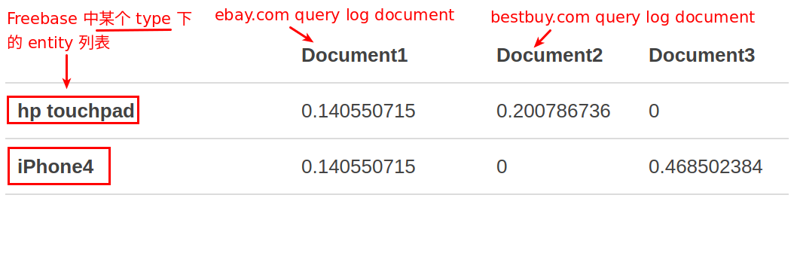
Empty page filter
我们发现… Empty pages from the same site tend to be highly similar.
随机输入采集空页面样本:
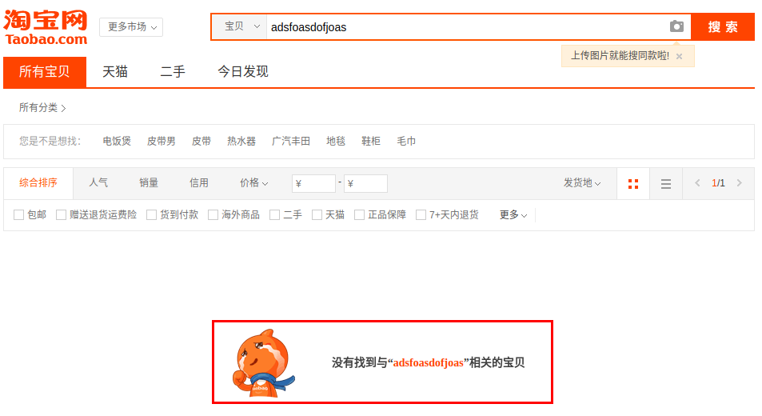
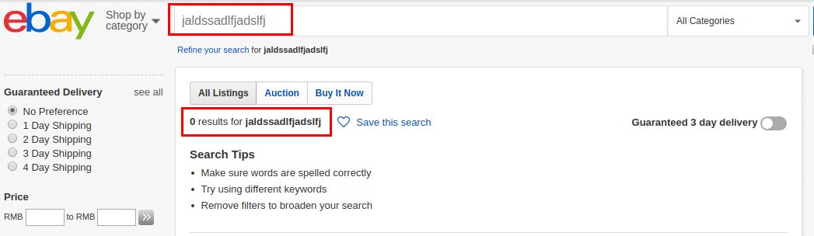
Let $S_{p1}$ and $S_{p2}$ be the sets of tokens representing the signature of the crawled page $p1$ and $p2$. The Jaccard Similarity between $S_{p1}$ and $S_{p2}$, denoted $Sim_{jac} (S_{p1}, S_{p2})$, is defined as:
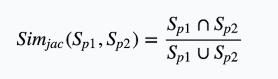
Jaccard 相似度:
计算两个集合之间的相似度
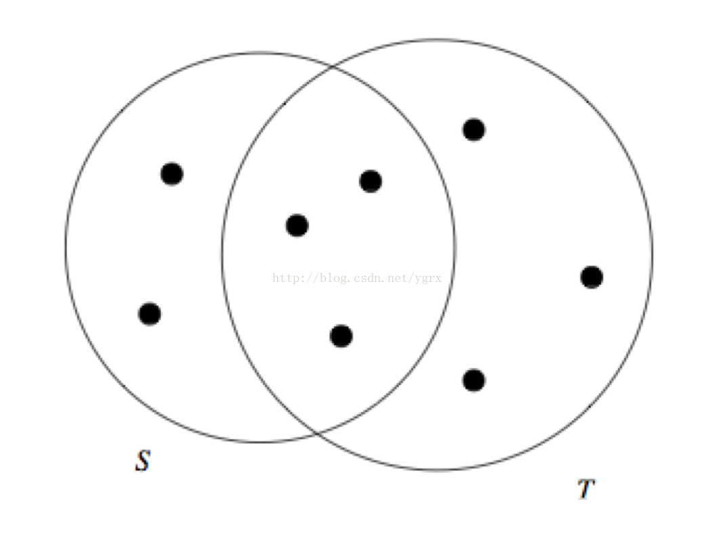
当平均值大于 $\theta$ 的时候，我们将它判断为空页面。 As we will show in experiments, this approach is very effective in detecting empty pages across different websites (with an overall precision of 0.89 and a recall of 0.9).
对于 signature 是如何计算的:
While the exact details of Sig are less important, we enumerate the important properties we want from such a function 参考: Google’s Deep-Web Crawl:
- the signature should be agnostic to HTML formatting, since presentation inputs often simply change the layout of the web page.
- Third, the signature must be tolerant to minor differences in page content. A common source of differences are advertisements, especially on commercial sites。 These advertisements are typically displayed on page margins. They contribute to the text on the page but do not reflect the content of the retrieved records and hence have to be filtered away.
- Lastly, the signature should not include the input values themselves.
二级页面抓取
We refer to the first set of pages obtained through URL templates as “first-level pages” (because they are one click away from homepage), and those pages that are linked from first-level pages as “second-level pages”.
The motivation for second level crawl
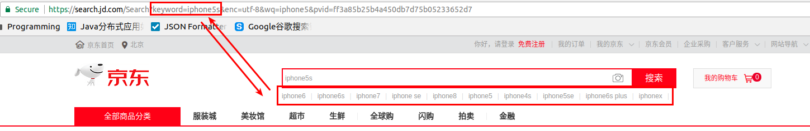
Faceted search/browsing paradigm:
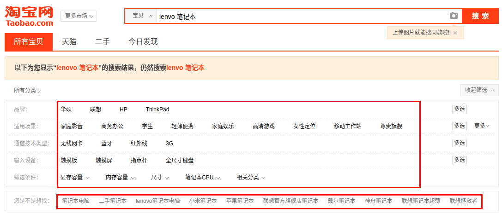
- improving content coverage
URL extraction and filtering
- Whil some second-level URLs are desirable, not all second level URLs should be crawled for effiency as well as quality reasons.
- We observe that filtering URLs by keyword-query arguments significantly reduces the number of URLs — typically by a factor of 3-5.
URL deduplication
We observe that after URL filtering, there are groups of URLs that are different in their text string but really lead to similar or nearly identical deep-web content.
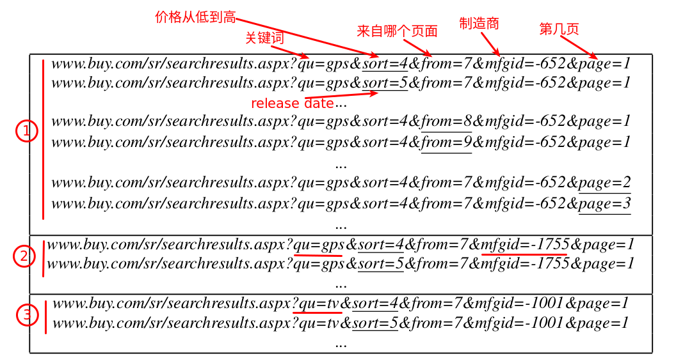
content-based URL deduplication
www.cnn.com/story?id=numwww.cnn.com/story_num
In this paper we propose an approach that analyzes URL argument patterns and deduplicates URLs even before any pages are crawled.
First, we categorize query segments into three groups:
- selection segments: are query segments that correspond to selection predicates and can affect the set of result entities.
- presentation segments: are query segments that do not change the result set, but only affect how the set of entities are presented.
- content irrelevant segments: are query segments that have no immediate impact on the result entities.
We then define two URLs as semantic duplicates if the corresponding selection queries have the same set of selection segments.
然后我们又注意到:
- The fact that these query segments in almost all pages indicates that they are not specific to the input keyword query, and are thus likely to be either presentational (sorting, page number, etc.), or content irrelevant (internal tracking, etc.).
- On the other hand, selection segments, like manufacturer name (“mfgid=-652” for “Garmin”) in the previous example, are much more sensitive to the input queries.
To capture this intuition we define a notion of prevalence at the query segment (argument/value pair) level and also at the argument level:
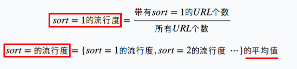
The average prevalence score at argument level is a more robust indicator of the prevalence of an argument.
我们将 any argument with prevalence higher than \theta 视为 semantically-irrelevant. On the other hand, if an query segment’s arguments has prevalence lower than \theta it is assumed to be a selection argment.
Experiments
简单讨论一下实验结果
Query extraction from query logs
In this experiment, we used 6 month’s worth Google’s query logs, and entities in Freebase as seed entities. In order to evaluate whether patterns produced by our approach is truly entity-irrelevant or not, we asked a domain expert to manually label top 200 patterns, as correct predictions (irrelevant to entities) or incorrect predictions (relevant to entities).
The top 10 most frequent prefix and suffix patterns we produced:
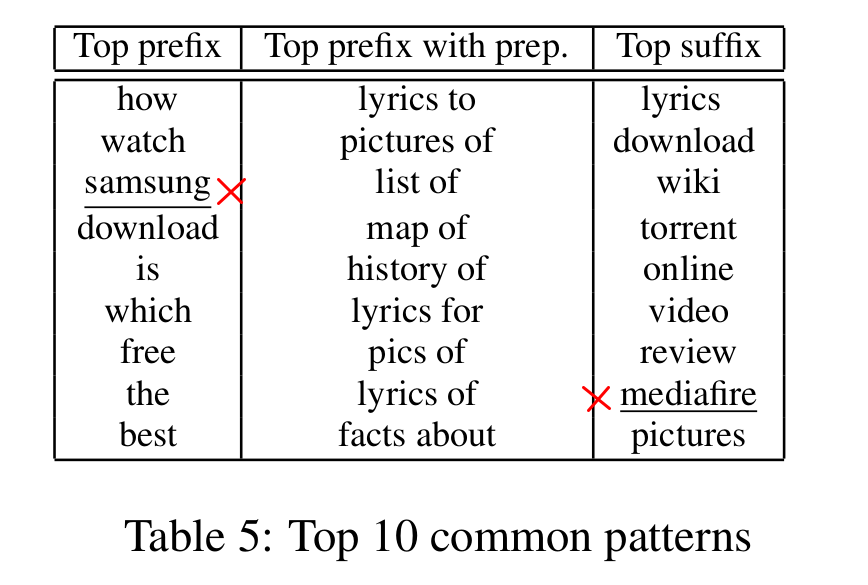
We summarize the precision for top 10, 20, 50, 100 and 200 patterns:
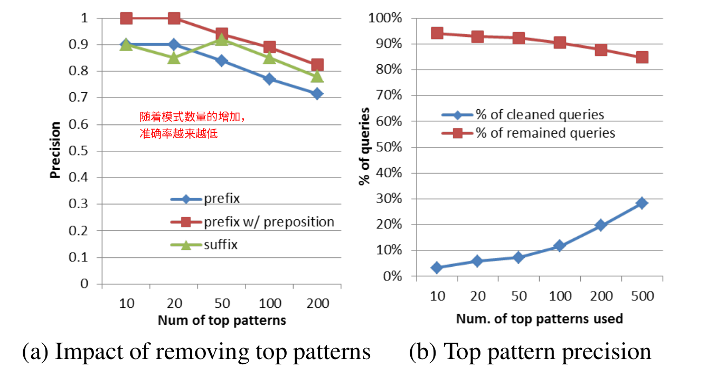
Entity expansion using Freebase
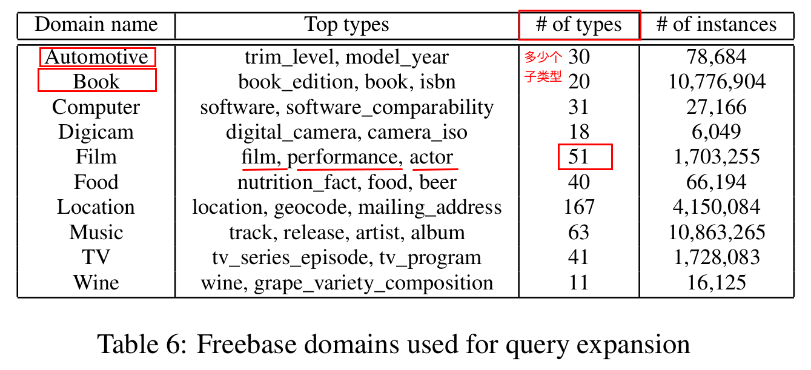
- 10 个领域
- 流量最大的前 100 零售商
|
|
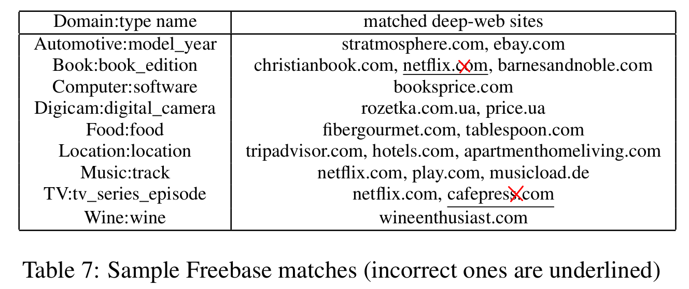
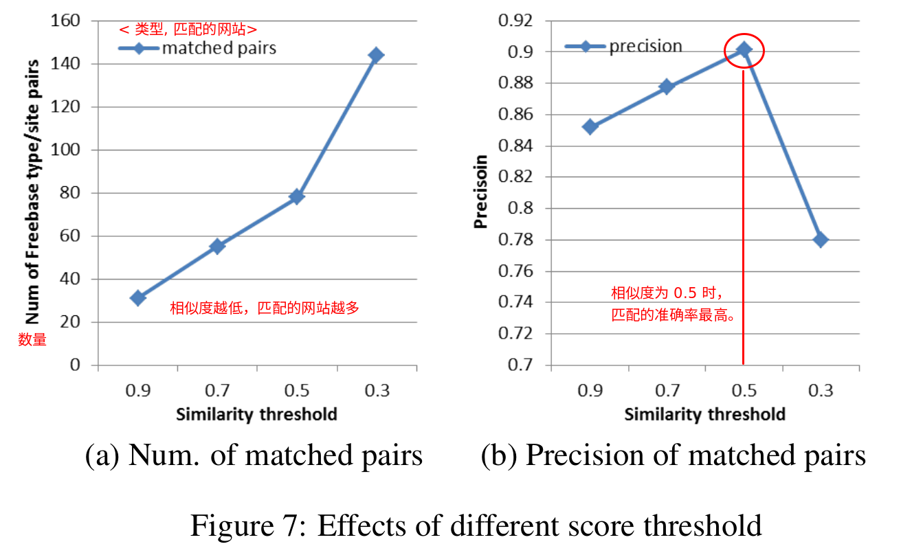
Empty page filtering
Precision and recall (准确率 & 召回率):
准确率和召回率是广泛用于信息检索和统计学分类领域的两个度量值，用来评价结果的质量。其中精度是检索出相关文档数与检索出的文档总数的比率，衡量的是检索系统的查准率；召回率是指检索出的相关文档数和文档库中所有的相关文档数的比率，衡量的是检索系统的查全率。 参考
一般来说，Precision 就是检索出来的条目（比如：文档、网页等）有多少是准确的，Recall就是所有准确的条目有多少被检索出来了。
正确率、召回率是在鱼龙混杂的环境中，选出目标的重要评价指标。不妨看看这些指标的定义先：
正确率 = 提取出的正确信息条数 / 提取出的信息条数召回率 = 提取出的正确信息条数 / 样本中的信息条数
两者取值在 0 和 1 之间，数值越接近 1，查准率或查全率就越高。
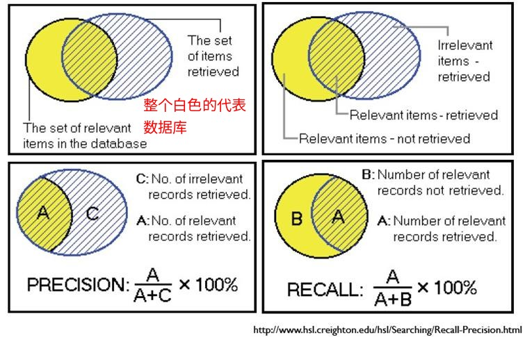
When a search engine returns 30 pages only 20 of which were relevant while failing to return 40 additional relevant pages, its precision is 20/30 = 2/3 while its recall is 20/60 = 1/3. So, in this case, precision is “how useful the search results are”, and recall is “how complete the results are”.
In pattern recognition, information retrieval and binary classification, Precision and Recall 是两个很重要的评估指标。
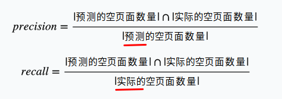
随机选择了 10 个高流量的网站:
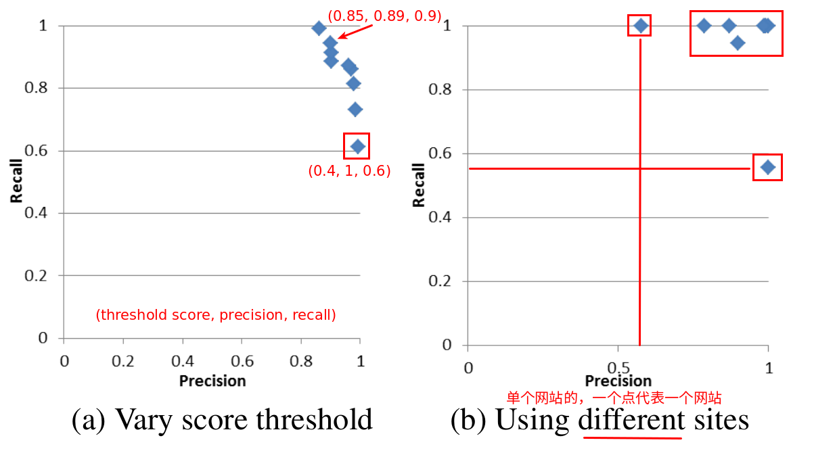
URL deduplication
继续使用了上面 10 个网站，阈值在 0.01 ~ 0.5 之间的结果：
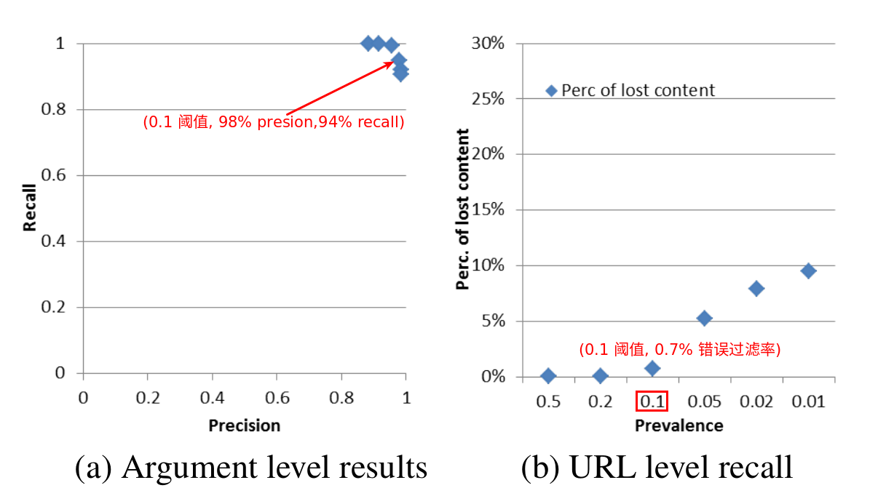
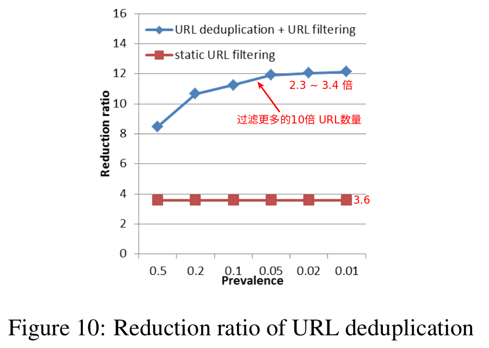
Conclusion
- In the template generation, our parsing approach only handles HTML “GET” forms but not “POST” forms or javascript forms.
- In query generation, although Freebase-based entity expansion is useful, certain sites with 低流量 or diverse traffic do not get matched with Freebase types effectively using query logs alone.
- Utilizing additional signals (e.g., entities bootstrapped from crawled pages) for entity expansion is an interesting area.
- Efficiently enumerate entity query for search forms with 多个文本框 is another interesting challenge.
（完）